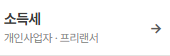
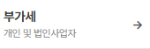
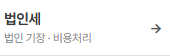
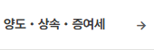
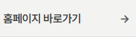
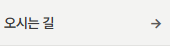
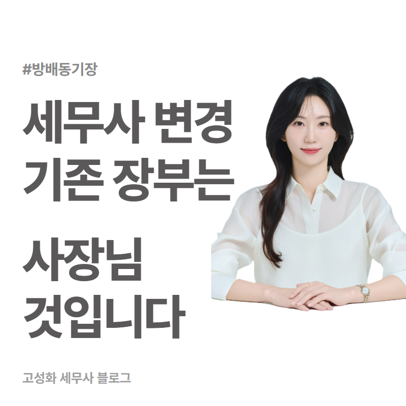
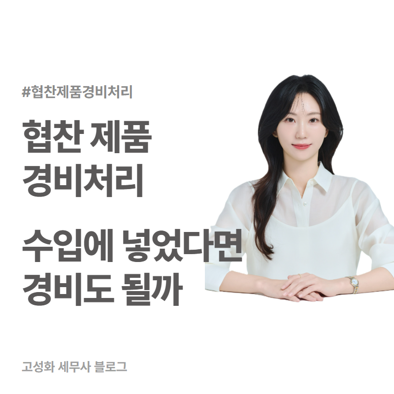
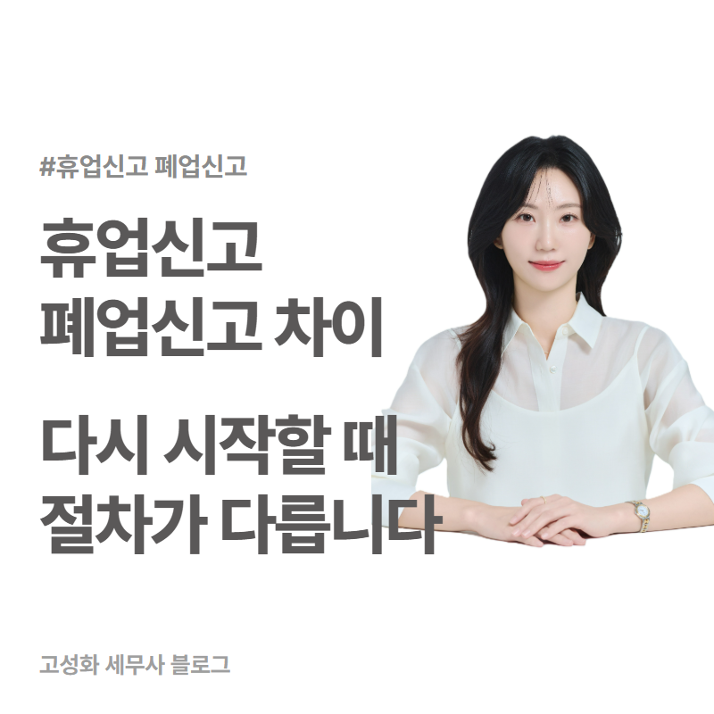
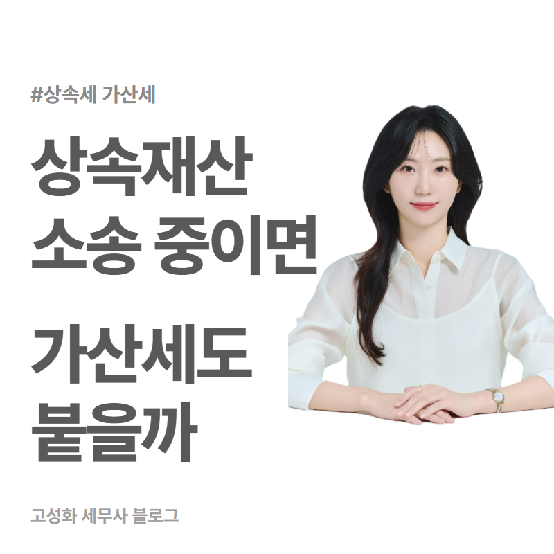

세무사 고성화(기존 프로필 영역은 그대로 유지)
세무・회계이야기 앨범형 · 정방형

방배동 기장 세무사 변경, 기존 장부는 사장님 것입니다

부모님께 빌린 사업자금 1억, 증여인가요 빌린 돈인가요

미용실 원장 연말 세금 체크리스트, 12월 31일 전에 4가지

법인 사업자등록, 법인설립신고 따로 내야 하나요

협찬 제품 경비처리, 수입에 넣었다면 경비도 되나요

서초 종합소득세 신고대행, 5월에 맡기면 된다는 오해

휴업신고 폐업신고 차이, 다시 시작할 때 절차가 다릅니다

의원 사업장현황신고 개원 첫해, 2월 10일 전 체크 5가지

상속재산 소송 중 상속세 신고, 가산세도 붙을까
활동정보블로그 이웃
글 보내기
글 스크랩
글 보내기
글 스크랩